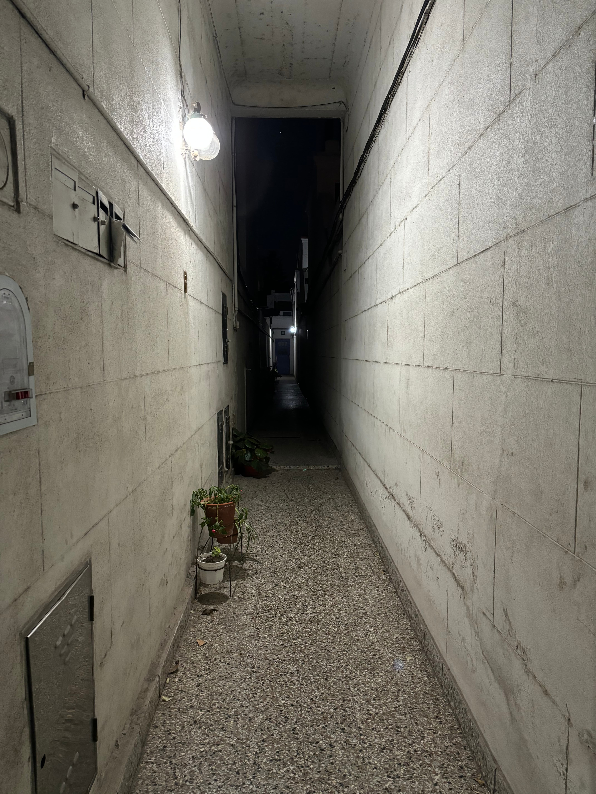

The Liminal Gallery
These images capture the unique, transitional beauty of liminal spaces in our city and beyond. You'll find a mix of everyday moments and extraordinary views, each evoking a sense of eeriness, nostalgia, and curiosity.
While the majority of the photos are from Buenos Aires, we've also included shots from other intriguing locations. We hope these images transport you to the in-between spaces that hold stories untold and possibilities unexplored.


